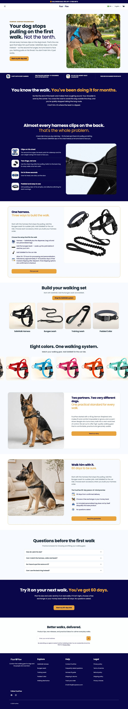
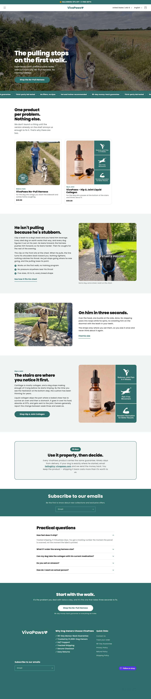
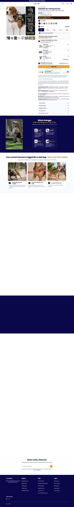
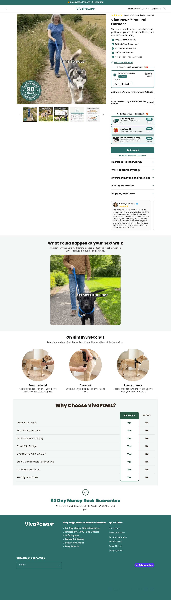

Quatro lojas lidas, uma página própria que resolve o tamanho primeiro
Home e página de produto comparadas em desktop. A proposta combina o mecanismo explicado da VivaPaws e da Dogshood, o recorte por raça da Little Dog Co. e o tamanho por peso da FourPaw.
01Por que estas quatro lojas
582
Dogshood · anúncios ativos e 425 mil visitas
observado
≥500
Little Dog Co. · anúncios ativos em 3 meses
observado
124
FourPaw · anúncios ativos, loja de 6 produtos
observado
57
VivaPaws · anúncios ativos, mecanismo mais claro
observado
Critério: sinal de escala de mídia (a mesma régua da estratégia), não achismo visual. A PawlyLab ficou de fora porque a PDP é uma oferta "grátis" que não se modela com segurança.
02Home: desktop
Desktop
DogshoodMODELAR

Modelarargumento do reflexo de oposição e comparação lado a lado
Little Dog Co.MODELAR

Modelaruma página por raça, mesmo produto
FourPawMODELAR

Modelarloja enxuta, tamanho por peso, troca grátis escrita
VivaPawsOBSERVAR

Observarmecanismo em texto simples; evitar o contador de avaliações
Steadytailblueprint
Nossa direçãoguia de medidas e Right Size Guarantee no topo
Home no celular dos concorrentes: não obtidoprints de celular não foram capturados nesta rodada. O celular da proposta está no blueprint abaixo.
03Página de produto: desktop
Desktop
DogshoodMODELAR

Modelarargumento do reflexo de oposição e comparação lado a lado
Little Dog Co.MODELAR

Modelaruma página por raça, mesmo produto
FourPawMODELAR

Modelarloja enxuta, tamanho por peso, troca grátis escrita
VivaPawsOBSERVAR

Observarmecanismo em texto simples; evitar o contador de avaliações
Steadytailblueprint
Nossa direçãoguia de medidas e Right Size Guarantee no topo
PDP no celular dos concorrentes: não obtidoprints de celular não foram capturados nesta rodada.
04Leitura de design, oferta e UX inferido
| Critério | Dogshood | Little Dog Co. | FourPaw | VivaPaws | Nossa direção |
|---|---|---|---|---|---|
| Design | tema próprio, comparação lado a lado | tema Shrine Pro, uma página por raça | loja enxuta de 6 produtos | tema Dawn, texto longo | claro e quente, raça e tamanho em destaque |
| Oferta | peitoral + sets + patch | mesmo peitoral em 4 páginas | peitoral + kit de passeio | brinde e 60% off | herói + bump + add-on + pack de 2 |
| Confiança | 90 dias, Klarna | 30 dias, cobra a troca | 60 dias, troca grátis | 90 dias, fica com o produto, contador de reviews inflado | Right Size Guarantee + 60 dias, só provas reais |
| Tamanho | Size Guide na PDP | Size Guide e produtos "Exchange" | tamanho por peso | "Tap to see size guide" | 3 passos + tabela por raça acima da dobra |
05Peso das páginas
| Loja | Peso da home | Peso da página de produto |
|---|---|---|
| Dogshood | não obtidonão medido nesta rodada | não obtidonão medido nesta rodada |
| Little Dog Co. | não obtidonão medido nesta rodada | não obtidonão medido nesta rodada |
| FourPaw | não obtidonão medido nesta rodada | não obtidonão medido nesta rodada |
| VivaPaws | não obtidonão medido nesta rodada | não obtidonão medido nesta rodada |
Meta e limiteCarregamento: não obtidonão foi medido nesta rodada (só prints). Meta para a loja nova: PDP abaixo de 1,5 MB, com imagens comprimidas. Não é Core Web Vitals de campo.
06Auditoria de imagens dos carrosséis
14
imagens do carrossel da VivaPaws (herói)
observado
1
imagem do patch na Dogshood
carrossel pobre: só serve de referência de enquadramento
observado
12
imagens da guia da FourPaw
observado
3
produtos com carrossel de referência
observado
| Produto | Concorrente campeão | Imagens no carrossel real | Observação |
|---|---|---|---|
| Peitoral | VivaPaws · no-pull-harness | 14 | packshot, mecanismo, lifestyle |
| Patch com nome | Dogshood · extra-patches | 3 | patch solto, patch no peitoral e verso com velcro |
| Guia elástica | FourPaw · bungee-leash | 12 | produto em uso e detalhes |
MétodoMétodo: o catálogo de cada loja (products.json via navegador) lista as imagens do produto; a seção Identidade traz uma por imagem baixada, com prompt próprio.
07Blueprint da sua loja monte a SUA assim
A planta visual da SUA loja: a home e a página de produto já desenhadas na identidade da marca Steadytail, com a copy em inglês nos lugares certos. É o layout para reproduzir no Shopify.
Como ler. Os blocos com fundo listrado e um rótulo (ex: "IMAGEM 3 · guia de tamanho") são onde entram as imagens. Todo o resto (textos, botões, preços) já está no lugar final. Ainda não há fotos do produto (falta amostra), então os espaços são reserva com a direção de arte.
1 · Layout desktop · Home à esquerda, página de produto à direita
Como as duas páginas ficam no computador. Role dentro de cada janela para ver a página inteira.
Home · tela cheia ↗
Página de produto · tela cheia ↗
2 · Layout celular a prioridade: 90% do tráfego é mobile
É aqui que o layout tem que estar impecável. Desenhe pensando primeiro nesta tela.
Home · tela cheia ↗
Página de produto · tela cheia ↗
A ordem dos blocos não é estética, é psicológica. A home abre com a promessa do tamanho certo e escolhe a raça antes do produto; a página de produto põe o guia de medidas de 3 passos, a tabela por raça e a Right Size Guarantee acima da dobra, porque o medo de errar o tamanho é o que trava a compra. O botão fixo no rodapé do celular mantém o caminho curto.
08Aprovação do blueprint contra os 4 concorrentes
| Critério | Melhor que os 4? | Onde falta |
|---|---|---|
| Design | sim | depende das fotos reais que ainda não existem |
| UX e responsividade | sim | celular desenhado primeiro, guia de medidas acima da dobra |
| Tempo de carregamento | a medir | o blueprint é maquete HTML; o peso real só existe com a loja publicada |
| Direção de web design | sim | paleta e tipografia na identidade visual |
AprovaçãoEstado: aprovado como planta, condicionado a medir o carregamento na loja real. Não é fotografia final.